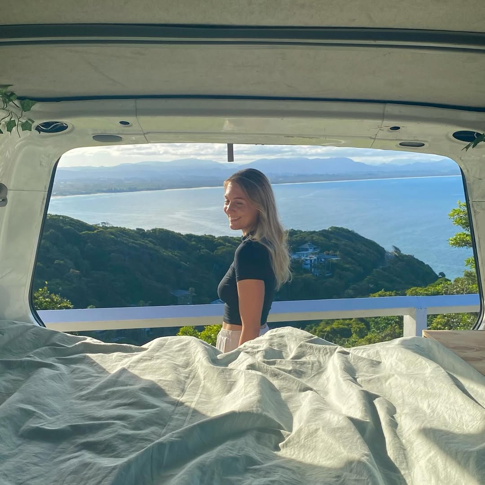

Veröffentlicht am 16. Februar 2025
Ein guter Start in den Tag kann deinen ganzen Tag beeinflussen. Hier sind einige Tipps, um morgens produktiver zu sein:
Indem du diese einfachen Schritte befolgst, kannst du deinen Morgen effektiver gestalten und den ganzen Tag über energiegeladen bleiben.